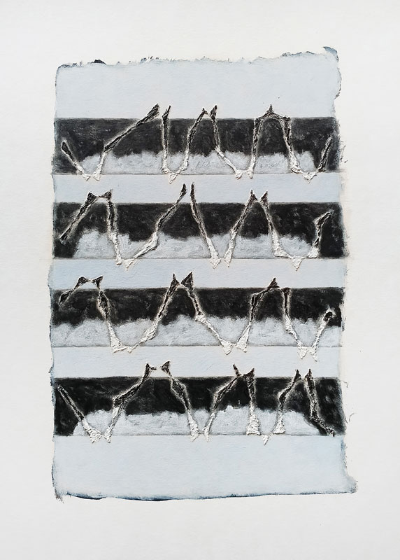

Details
Vernissage: Mittwoch, den 8. Juni 2022
Einführende Worte: Maja ERDELJANIN (Kuratorin und Künstlerin)
Die Ausstellung war bis Ende August 2022 nach Vereinbarung zu besuchen.

Vernissage: Mittwoch, den 8. Juni 2022
Einführende Worte: Maja ERDELJANIN (Kuratorin und Künstlerin)
Die Ausstellung war bis Ende August 2022 nach Vereinbarung zu besuchen.